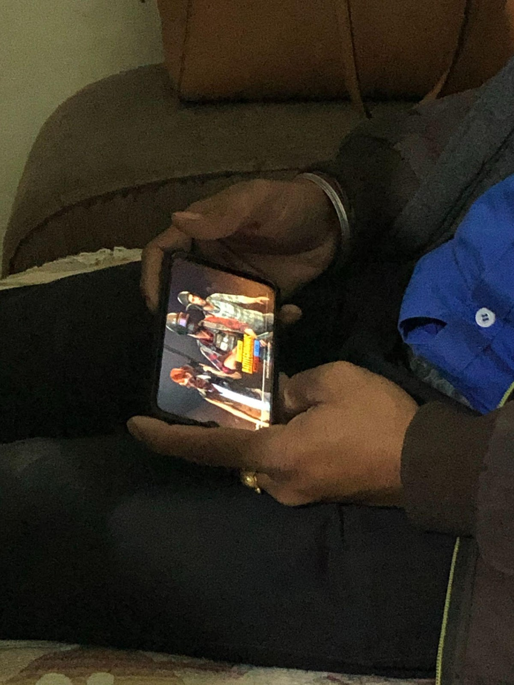
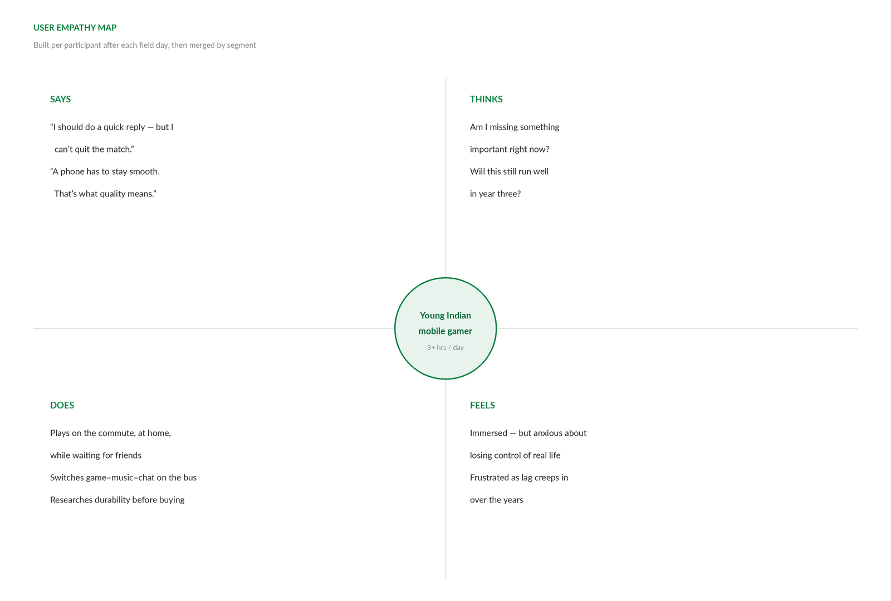
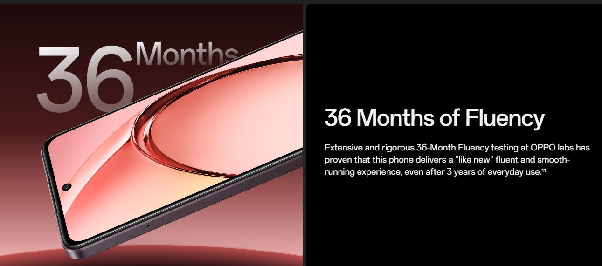
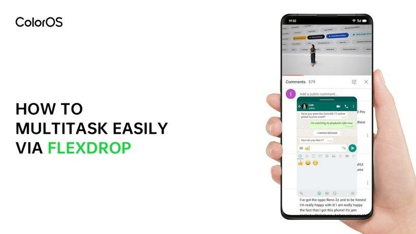
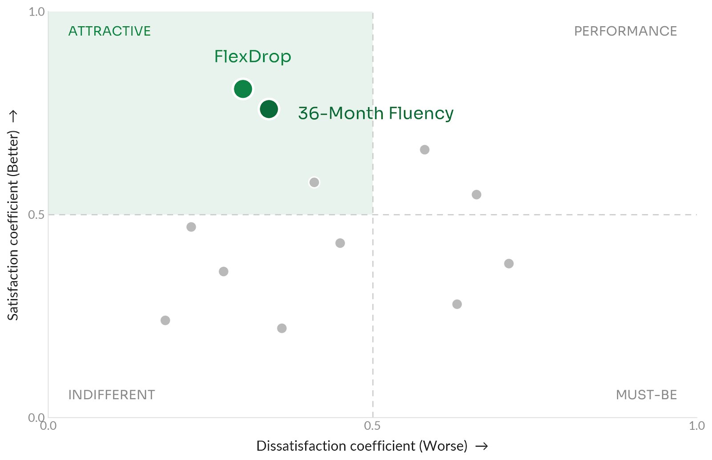

From Ethnography to Kano: How 10 Days in India Became Two Global Features
A mixed-methods discovery study that turned Indian gamers' unspoken needs into two shipped features — now on 500M+ devices worldwide.

Overview
Background
For OPPO — the world's #5 smartphone manufacturer — India is the world's #2 smartphone market and one of the fastest-growing. Its user base skews young and spends heavy daily time on mobile gaming.
The trigger: gaming experience ranked among the top 3 improvement areas in NPS verbatim analysis among young Indian users — and purchase-journey research confirmed it: users perceived fewer gaming features on OPPO phones vs. competitors.
Questions
Business question: Which gaming features should we prioritize to make our phones more appealing than competitors' to young Indian users — driving purchase intent and long-term loyalty?
- RQ1 · Discovery → ethnography: How do young Indian users play mobile games in their daily lives — in what contexts, and what unmet needs and pain points emerge?
- RQ2 · Evaluation → Kano test: Which candidate features most increase purchase appeal — and which are must-haves vs. delighters?
Long-term usage was tracked post-launch via feature DAU and NPS monitoring.
Design
Our prior understanding of Indian users came mostly from remote surveys and online interviews — we had rarely observed real usage contexts, or the pain points users themselves can't articulate. Since gaming features would evolve over years, we invested in one foundational, in-context study: qual to discover, quant to prioritize.
- W1 — Desk research + stakeholder briefing
- W2–3 — Fieldwork in India
10 days, Mumbai & Delhi - W4 — Synthesis + internal workshop
25+ ideas → 12 concepts - W5 — Kano survey design
illustrated concept cards - W6 — Online fieldwork
n=150 - W7 — Analysis + final readout
2 features shipped
Sampling — same population, qual to quant
| Variable | Design |
|---|---|
| Gender | 4 male / 4 female |
| Occupation | 4 working professionals / 4 university students |
| Gaming time | 3+ hrs/day (internal standard: 3 hrs = moderate, 5+ hrs = heavy) |
| Game type | Mix of heavy titles (battle / competitive, e.g. PUBG) and light casual games |
The quantitative sample (n=150, online) used the same criteria — so quant results directly validated qual-derived concepts on the same population.
Decisions
This was the team's first overseas study. India was culturally and behaviorally unfamiliar to almost everyone — including me. So I prepared rather than improvised: one week of dedicated desk research (PEST analysis, cultural studies, anthropological literature) distilled into a knowledge framework and hypotheses, cross-checked against internal user data — plus a deep pre-departure briefing so none of the ~10 participating stakeholders landed with an empty mental model.
Fieldwork
Spend a day with a user: full-day in-context observation, followed by a same-day in-depth interview. We observed where they play, when, in what environment, with whom, which games, and how they feel.
Why observe first, interview after: behaviors anchored the conversation. Instead of asking users to recall in a lab room, we probed moments we had just witnessed — "why did you switch out of the game right then?" — surfacing needs users couldn't articulate unprompted.

Analysis through two lenses — patterns across users (open codes → themes → features) and depth within each user (says / thinks / does / feels, built same-day in the field):

Findings
Indian users expect their phones to stay smooth for 3+ years — replacement cycles run notably longer than in most markets (typical: ~2 years). Many gaming pain points emerge late in a phone's life: Android lag compounds over time, and gaming amplifies it. The underlying need: durability — sustained performance, not day-one performance.
→ Feature direction: a long-term fluency commitment — later shipped as 36-Month Fluency.

The moment we saw it: a participant deep in a PUBG match. His girlfriend messages him — but a match runs 30+ minutes and can't be paused. The reply came far too late. (He told us the consequences were serious.) And again: a student on his 1.5-hour bus ride to campus, wanting to switch fluidly between game, music and chat — and finding it clunky every time.
The insight: users want to immerse fully in games and stay in control of real life. Gaming is part of their life — not a trap that holds them hostage.
→ Feature direction: lightweight in-game multitasking — later shipped as FlexDrop.

Workshop — run immediately after returning, while immersion was fresh. ~10 stakeholders, each contributing 3–5 ideas grounded in scenes they had personally observed → 25+ ideas, filtered by technical feasibility, differentiation, and gaming-scenario relevance → 12 concepts.
Kano test — n=150, online. Each concept as an illustrated concept card, with screening and data-quality checks. Both FlexDrop and 36-Month Fluency classified as attractive features with the highest appeal scores.

Impact
- ~1 year later — FlexDrop launched (Dec 2020)
~1M DAU globally - ~2 years later — 36-Month Fluency launched (2022)
Flagship selling point of the series; ranked among the top 5 selling points in NPS driver analysis - 2024 — Extended to 48-Month Fluency
The feature proved so popular that engineering committed to further iteration - Ongoing
Monitored via feature DAU and NPS tracking — both features shipped globally to 500M+ users
I supported these features end-to-end — hands-on through discovery, coaching through evaluation. The builders had been in the field; they owned the insights. When research capacity ran thin, I coached PMs and designers to run usability and A/B tests themselves, sharing past project documentation as templates and supporting participant recruitment.
Reflection
Three keys to cross-cultural research:
- Do the homework.PEST, culture, anthropology — before landing. Behavior has roots you must know in advance.
- Keep fresh eyes.Outsiders notice pain points locals have normalized. Being unfamiliar is an advantage if you use it.
- Stay open.Understand before judging — and treat local colleagues as mentors.
If I did it again: validate across more cities (lightweight remote interviews in Bangalore, Chennai, Hyderabad); add a 5–7 day diary study for longitudinal context a single-day visit can't capture; and keep one researcher-led checkpoint — coaching PMs and designers on evaluative testing worked, but enablement scales research, it doesn't replace it.